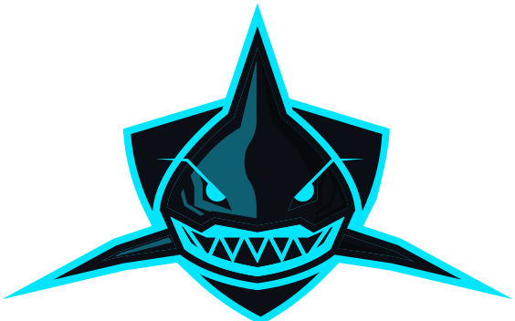

The shark palette does not match your product.
I told you earlier that no colour change was needed. That was wrong — I had only the logo file. Your repo runs a different palette and a different logo, and the two cannot both be Juke.
Two palettes, no overlap
#00E5FF is near-full saturation. #84E4E4 is roughly a third of it. Side by side the shark aqua reads as a faded version of your teal, not a sibling.
Your surfaces are blue-tinted neutrals. The shark's #002F3F is a saturated teal — dropping it in as a surface would tint every panel in the app.
Your logo's stem is purple, and shadow.card-hover washes purple inside every card. The shark system has no answer for it.
There is already a logo in the code
web/src/components/juke-logo/JukeLogo.jsx ships a goalpost monogram — teal uprights and crossbar, purple stem — wired into six components. Its own README calls it "option 6a".

 Juke
Juke
The shark in your palette
Same geometry, recoloured to #00E5FF on #0B0E14. The duo version uses your purple for the shading, which is the one that stops looking like a shark from somewhere else.



In your header
Your real chrome: h-16 nav over an h-9 ticker on obsidian, lockup at size=21.
Juke
The third row is the one I would not ship. Archivo 900 is already loaded, already the wordmark, and sits better with Barlow Condensed and Inter than the stencil letterforms do — those came from an older navy-era generation of the brand, not this one.
Three ways forward
One logo. The shark becomes the mark, keeps Archivo 900 as the wordmark, and adopts #00E5FF / #7B1FA2 / #0B0E14. Nothing in the app's colour system moves.
Swap the internals of JukeLogo.jsx. Six call sites keep working unchanged. Re-export favicons, PWA icons and the OG card.
The goalpost is a cleverer piece of design than the shark. You would be trading wit for memorability.
Header, favicon and app icon stay as they are. The shark appears in draft-room moments, empty states, the grade reveal, launch art and merch — the places a character earns its keep.
Lowest. No migration at all — additive only.
You maintain two marks, and the shark never becomes the recognisable asset you asked for. Mascots that never appear in the header stay decoration.
Obsidian becomes #002F3F, teal becomes #84E4E4, purple is retired.
Highest. Every surface, the CTA gradient, the card-hover wash, the glow keyframes and the gradient tile. The six position colours survive — see 4a.
The aqua is a third of your teal's saturation. The product would get noticeably calmer, and your own design notes say atmosphere is already the gap.
Where the logo actually lives
Read from the repo, so the handoff no longer has to guess. There are three brand generations live at once.
DraftCockpitHeader · DraftRoomStatusBarSix call sites, sizes 18–21. All go through the component — they need no edit if A is chosen.Goalpost
juke-app-icon-{dark,gradient}.svg
juke-app-icon-{180,192,512,1024}.pngFavicon and PWA icons, tile built in. The gradient tile is teal→purple.Goalpost
favicon-32.png · og-image.pngRepo root. The navy shield, not the goalpost. Referenced by 404.html and all three docs pages. Your CLAUDE.md already flags these as unreachable by the CSS-driven passes.Navy — stale
Your 404 page, privacy, terms and the how-it-works doc still serve the navy shield favicon while the app serves the goalpost. The mark is also hand-inlined in at least three places rather than referenced once. That is a consolidation job independent of which logo wins, and it is the cheapest brand work available to you right now.